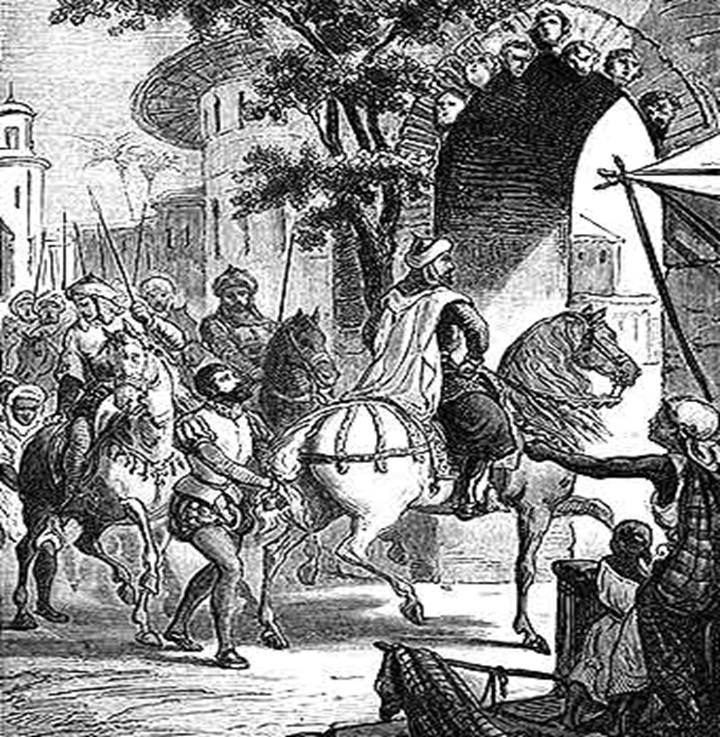
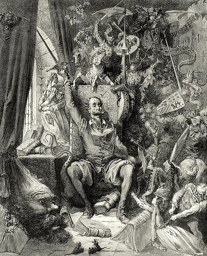

Biografia
Miguel de Cervantes Saveedra
Introduccion

Miguel de Cervantes (retrato imaginario de Eduardo Balaca)
Don Quijote de la Mancha ha sido unánimemente definido como la obra cumbre de la literatura universal y una de las máximas creaciones del ingenio humano. Considerado asimismo el arranque de la novela moderna y concebido inicialmente por Cervantes como una parodia de los libros de caballerías, el Quijote es un libro externamente cómico e íntimamente triste, un retrato de unos ideales admirables burlescamente enfrentados a la mísera realidad; no son pocos los paralelos que se han querido establecer con la España imperial de los Austrias, potencia hegemónica destinada a gobernar el mundo en el siglo XVI y a derrumbarse en el XVII, y con la vida de su autor, gloriosamente herido en el triunfo de Lepanto y abocado luego a toda suerte de desdichas.
A diferencia de la de su contemporáneo Lope de Vega, quien conoció desde joven el éxito como comediógrafo y poeta y también como seductor, la vida de Cervantes fue ciertamente una ininterrumpida serie de pequeños fracasos domésticos y profesionales, en la que no faltó ni el cautiverio, ni la injusta cárcel, ni la afrenta pública. No sólo no contaba con rentas, sino que le costaba atraerse los favores de mecenas o protectores; a ello se sumó una particular mala fortuna que lo persiguió durante toda su vida. Sólo en sus últimos años, tras el éxito de las dos partes del Quijote, conoció cierta tranquilidad y pudo gozar del reconocimiento hacia su obra, aunque sin llegar nunca a superar las penurias económicas.
Biografia

Supuesto retrato de Miguel de Cervantes atribuido al poeta y pintor Juan de Jáuregui
Cuarto de los siete hijos del matrimonio de Rodrigo de Cervantes Saavedra y Leonor de Cortinas, Miguel de Cervantes Saavedra nació en Alcalá (dinámica sede de la segunda universidad española, fundada en 1508 por el cardenal Cisneros) entre el 29 de septiembre (día de San Miguel) y el 9 de octubre de 1547, fecha en que fue bautizado en la parroquia de Santa María la Mayor.
La familia de su padre conocía la prosperidad, pero su abuelo Juan, graduado en leyes por Salamanca y juez de la Santa Inquisición, abandonó el hogar y comenzó una errática y disipada vida, dejando a su mujer y al resto de sus hijos en la indigencia, por lo que el padre de Cervantes se vio obligado a ejercer su oficio de cirujano barbero, lo cual convirtió la infancia del pequeño Miguel en una incansable peregrinación por las más populosas ciudades castellanas. Por parte materna, Cervantes tenía un abuelo magistrado que llegó a ser efímero propietario de tierras en Castilla. Estos pocos datos acerca de las profesiones de los ascendientes de Cervantes fueron la base de la teoría de Américo Castro sobre el origen converso (judíos obligados a convertirse en cristianos desde 1495) de ambos progenitores del escritor.
El destino de Miguel parecía prefigurarse en parte en el de su padre, quien, acosado por las deudas, abandonó Alcalá para buscar nuevos horizontes en el próspero Valladolid, pero sufrió siete meses de cárcel por impagos en 1552, y se asentó en Córdoba en 1553. Dos años más tarde, en esa ciudad, Miguel ingresó en el flamante colegio de los jesuitas. Aunque no fuera persona de gran cultura, Rodrigo se preocupaba por la educación de sus hijos; el futuro escritor fue un lector precocísimo y sus dos hermanas sabían leer, cosa muy poco usual en la época, aun en las clases altas. Por lo demás, la situación de la familia era precaria.
En 1556 Leonor vendió el único sirviente que le quedaba y partieron hacia Sevilla con el fin de mejorar económicamente, pues esta ciudad era la puerta de España a las riquezas de las Indias y la tercera ciudad de Europa (tras París y Nápoles) en la segunda mitad del siglo XVI. A los diecisiete años, Miguel era un adolescente tímido y tartamudo, que asistía a clase al colegio de los jesuitas y se distraía como asiduo espectador de las representaciones del popular Lope de Rueda, como recordaría luego, en 1615, en el prólogo a la edición de sus propias comedias: «Me acordaba de haber visto representar al gran Lope de Rueda, varón insigne en la representación y del entendimiento».
En 1551 la hasta entonces pequeña y tranquila villa de Madrid había sido convertida en capital por Felipe II, por lo que en los años siguientes la ciudad quintuplicaría su tamaño y población; llevados nuevamente por el afán de prosperar, los Cervantes se trasladaron en 1566 a la nueva capital. No se sabe con certeza que Cervantes hubiera asistido a la universidad, a pesar de que en sus obras mostró familiaridad con los usos y costumbres estudiantiles; en cambio, su nombre aparece en 1568 como autor de cuatro composiciones en una antología de poemas en alabanza de Isabel de Valois, tercera esposa de Felipe II, fallecida ese mismo año. El editor del libro, el humanista Juan López de Hoyos (probable introductor de Cervantes a la lectura de Virgilio, Horacio, Séneca y Catulo y, sobre todo, a la del humanista Erasmo de Rotterdam) se refiere a Cervantes como «nuestro caro y amado alumno». Otros aventuran, sin embargo, que en el círculo o escuela de Hoyos, Cervantes había sido profesor y no discípulo.
Soldado de Lepanto

La batalla de Lepanto
En el año de 1569 un tal Miguel de Cervantes fue condenado en Madrid a arresto y amputación de la mano derecha por herir a un tal Antonio de Segura. La pena, corriente, se aplicaba a quien se atreviera a hacer uso de armas en las proximidades de la residencia real. No se sabe si Cervantes salió de España ese mismo año huyendo de esta sanción, pero lo cierto es que en diciembre de 1569 se encontraba en los dominios españoles en Italia, provisto de un certificado de cristiano viejo (sin ascendientes judíos o moros), y meses después era soldado en la compañía de Diego de Urbina.
Pero la gran expectativa bélica estaba puesta en la campaña contra el turco, en la que el Imperio español cifraba la continuidad de su dominio y hegemonía en el Mediterráneo. Diez años antes, España había perdido en Trípoli cuarenta y dos barcos y ocho mil hombres. En 1571 Venecia y Roma formaban, con España, la Santa Alianza, y el 7 de octubre, comandadas por el hermanastro bastardo del rey de España, Juan de Austria, las huestes españolas vencieron a los turcos en la batalla de Lepanto. Fue la gloria inmediata, una gloria que marcó a Cervantes, el cual relataría muchos años después, en la primera parte del Quijote, las circunstancias de la lucha. En su transcurso recibió el escritor tres heridas, una de las cuales, si se acepta esta hipótesis, inutilizó para siempre su mano izquierda y le valió el apelativo de «el manco de Lepanto» como timbre de gloria.
Junto a su hermano menor, Rodrigo, Cervantes entró en batalla nuevamente en Corfú, también al mando de Juan de Austria. En 1573 y 1574 se encontraba en Sicilia y en Nápoles, donde mantuvo relaciones amorosas con una joven a quien llamó «Silena» en sus poemas y de la que tuvo un hijo, Promontorio. Es posible que pasara por Génova a las órdenes de Lope de Figueroa, puesto que la ciudad ligur aparece descrita en su novela ejemplar El licenciado Vidriera, y finalmente se dirigiera a Roma, donde frecuentó la casa del cardenal Acquaviva (a quien dedicaría La Galatea), conocido suyo tal vez desde Madrid, y por cuya cuenta habría cumplido algunas misiones y encargos.
Fue ésta la época en que Cervantes se propuso conseguir una situación social y económica más elevada dentro de la milicia mediante su promoción al grado de capitán, para lo cual obtuvo dos cartas de recomendación ante Felipe II, firmadas por Juan de Austria y por el virrey de Nápoles, en las que se certificaba su valiente actuación en la batalla de Lepanto. Con esta intención, Rodrigo y Miguel de Cervantes se embarcaron en la goleta Sol, que partió de Nápoles el 20 de septiembre de 1575 , y lo que debía ser un expedito regreso a la patria se convirtió en el principio de una infortunada y larga peripecia.
El cautiverio en Argel

Cervantes, prisionero del rey Hassán (grabado de Eusebio Planas)
A poco de zarpar, la goleta se extravió tras una tormenta que la separó del resto de la flotilla y fue abordada, a la altura de Marsella, por tres corsarios berberiscos al mando de un albanés renegado de nombre Arnaute Mamí. Tras encarnizado combate y la consiguiente muerte del capitán cristiano, los hermanos cayeron prisioneros. Las cartas de recomendación salvaron la vida a Cervantes, pero serían, a la vez, la causa de lo prolongado de su cautiverio: Mamí, convencido de hallarse ante una persona principal y de recursos, lo convirtió en su esclavo y lo mantuvo apartado del habitual canje de prisioneros y del tráfico de cautivos corriente entre turcos y cristianos. Esta circunstancia y su mano lisiada lo eximieron de ir a las galeras.
Argel era en aquel momento uno de los centros de comercio más ricos del Mediterráneo. En él muchos cristianos pasaban de la esclavitud a la riqueza renunciando a su fe. El tráfico de personas era intenso, pero la familia de Cervantes estaba bien lejos de poder reunir la cantidad necesaria siquiera para el rescate de uno de los hermanos. Cervantes protagonizó, durante su prisión, cuatro intentos de fuga. El primero fue una tentativa frustrada de llegar por tierra a Orán, que era el punto más cercano de la dominación española.
El segundo, al año de aquél, coincidió con los preparativos de la liberación de su hermano. En efecto, Andrea y Magdalena, las dos hermanas de Cervantes, mantuvieron un pleito con un madrileño rico llamado Alonso Pacheco Pastor, durante el cual demostraron que debido al matrimonio de éste sus ingresos como barraganas se verían mermados, y, según costumbre, obtuvieron dotes que fueron destinadas al rescate de Rodrigo, quien saldría de Argel el 24 de agosto de 1577. Los hermanos pudieron despedirse pese a haber fracasado el segundo intento de fuga de Miguel, que se salvó de la ejecución gracias a que su dueño lo consideraba un «hombre principal».
El tercer intento fue mucho más dramático en sus consecuencias: Cervantes contrató un mensajero que debía llevar una carta al gobernador español de Orán. Interceptado, el mensajero fue condenado a muerte y empalado, mientras que al escritor se le suspendieron los dos mil azotes a los que se le había condenado y que equivalían a la muerte . Una vez más, la presunción de riqueza le permitió conservar la vida y alargó su cautiverio. Esto sucedía a principios de 1578.
Finalmente, un año y medio más tarde, Cervantes planeó una fuga en compañía de un renegado de Granada, el licenciado Girón. Delatados por un tal Blanco de Paz, Cervantes fue encadenado y encerrado durante cinco meses en la prisión de moros convictos de Argel. Tuvo un nuevo dueño, el rey Hassán, que pidió seiscientos ducados por su rescate. Cervantes estaba aterrado: temía un traslado a Constantinopla. Mientras tanto su madre, doña Leonor, había iniciado trámites para su rescate. Fingiéndose viuda, reunió dinero, obtuvo préstamos y garantías, se puso bajo la advocación de dos frailes y, en septiembre de 1579, entregó al Consejo de las Cruzadas cuatrocientos setenta y cinco ducados. Hassán retuvo a Cervantes hasta el último momento, mientras los frailes negociaban y pedían limosna para completar la cantidad. Por último, el 19 de septiembre de 1580, fue liberado , y tras un mes en el que para limpiar su nombre pleiteó contra Blanco de Paz, se embarcó para España el 24 de octubre.
Retorno a la patria

Miguel de Cervantes (grabado de Fernado Selma, siglo XVIII)
Cinco días más tarde, después de un lustro de cautiverio, Cervantes llegó a Denia y volvió a Madrid. Tenía treinta y tres años y había pasado los últimos diez entre la guerra y la prisión; la situación de su familia, empobrecida y endeudada con el Consejo de las Cruzadas, reflejaba en cierto modo la profunda crisis general del imperio, que se agravaría luego de la derrota de la Armada Invencible en 1588. Al retornar, Cervantes renunció a la carrera militar, se entusiasmó con las perspectivas de prosperidad de los funcionarios de Indias, trató de obtener un puesto en América y fracasó. Mientras tanto, fruto de sus relaciones clandestinas con una joven casada, Ana de Villafranca (o Ana de Rojas), nació una hija, Isabel, criada por su madre y por el que aparecía como su padre putativo, Alonso Rodríguez.
A los treinta y siete años, Cervantes contrajo matrimonio; su novia, Catalina de Salazar y Palacios, era de una familia de Esquivias, pueblo campesino de La Mancha. Tenía sólo dieciocho años; no obstante, no parece haber sido una unión signada por el amor. Meses antes, el escritor había acabado su primera obra importante, La Galatea, una novela pastoril al estilo puesto en boga por la Arcadia de Jacopo Sannazaro ochenta años atrás. El editor Blas de Robles le pagó 1.336 reales por el manuscrito.
Esta cifra nada despreciable y la buena acogida y el relativo éxito del libro animaron a Cervantes a dedicarse a escribir comedias, aunque sabía que mal podía competir él, todavía respetuoso de las normas clásicas, con el nuevo modo de Lope de Vega, dueño absoluto de la escena española. Las dos primeras (La comedia de la confusión y Tratado de Constantinopla y muerte de Selim, escritas hacia 1585 y desaparecidas ambas) obtuvieron relativo éxito en sus representaciones, pero Cervantes fue vencido por el vendaval lopesco, y a pesar de las veinte o treinta obras compuesta en esta etapa (de las que sólo conocemos nueve títulos y dos textos, Los tratos de Argel y Numancia), alrededor de 1600 había dejado de escribir comedias, actividad que retomaría al final de sus días.
Entre 1585 y 1600 Cervantes fijó su residencia en Esquivias, pero solía visitar Madrid solo; allí alternaba con los escritores de su tiempo, leía sus obras y mantenía una permanente querella con Lope de Vega. En 1587 ingresó en la Academia Imitatoria, primer círculo literario madrileño, y ese mismo año fue designado comisario real de abastos (recaudador de especies) para la Armada Invencible. También este destino le fue adverso: en Écija se enfrentó con la Iglesia por su excesivo celo recaudatorio y fue excomulgado; en Castro del Río fue encarcelado (1592), acusado de vender parte del trigo requisado. Al morir su madre en 1594, abandonó Andalucía y volvió a Madrid.
Pero las penurias económicas siguieron acompañándole. Nombrado recaudador de impuestos, quebró el banquero a quien había entregado importantes sumas y Cervantes dio con sus huesos en prisión, esta vez en la de Sevilla, donde permaneció cinco meses. En esta época de extrema carencia comenzó probablemente la redacción de Don Quijote de la Mancha. Entre 1604 y 1606, la familia de Cervantes, su esposa, sus hermanas y su aguerrida hija natural, así como sus sobrinas, siguieron a la corte a Valladolid, hasta que el rey Felipe III ordenó el retorno a Madrid.
El Quijote

Don Quijote enloquece leyendo libros de caballerías (ilustración de Gustave Doré, 1863)
Su autor, mientras tanto, seguía pasando estrecheces. No le ofreció respiro ni siquiera la vida literaria: animado por el éxito del Quijote, ingresó en 1609 en la Cofradía de Esclavos del Santísimo Sacramento, a la que también pertenecían Lope de Vega y Francisco de Quevedo. Era ésta costumbre de la época, que ofrecía a Cervantes la oportunidad de obtener algún protectorado.
En aquel mismo año se firmó el decreto de expulsión de los moriscos y se acentuó el endurecimiento de la vida social española, sometida al rigor inquisitorial. Cervantes saludó la expulsión con alegría, mientras su hermana Magdalena ingresaba en una orden religiosa. Fueron años de redacción de testamentos y contiendas sórdidas: Magdalena había excluido del suyo a Isabel en favor de otra sobrina, Constanza, y Cervantes renunció a su parte de la finca de su hermano también en favor de aquélla, dejando fuera a su propia hija, enzarzada en un pleito interminable con el propietario de la casa en la que vivía y en el que Cervantes se había visto obligado a declarar a favor de su hija.
A pesar de no conseguir siquiera (como tampoco lo logró Góngora) ser incluido en el séquito de su mecenas el conde de Lemos, recién nombrado nuevo virrey de Nápoles (el cual, sin embargo, le daba muestras concretas de su favor), Cervantes escribió a un ritmo imparable: las Novelas ejemplares vieron la luz en 1613; el Viaje al Parnaso, en verso, en 1614. Ese mismo año lo sorprendió la aparición, en Tarragona, de una segunda parte espuria del Quijote escrita por un tal Alonso Fernández de Avellaneda, que se proclamó auténtica continuación de las aventuras del hidalgo. Así, enfermo y urgido, y mientras preparaba la publicación de las Ocho comedias y ocho entremeses nuevos nunca representados (1615), acabó la segunda parte del Quijote, que se imprimiría en el curso del mismo año.
A principios de 1616 estaba terminando una novela de aventuras en estilo bizantino: Los trabajos de Persiles y Sigismunda. El 19 de abril recibió la extremaunción y al día siguiente redactó la dedicatoria al conde de Lemos, ofrenda que ha sido considerada como exquisita muestra de su genio y conmovedora expresión autobiográfica: «Ayer me dieron la extremaunción y hoy escribo ésta; el tiempo es breve, las ansias crecen, las esperanzas menguan y, con todo esto, llevo la vida sobre el deseo que tengo de vivir...».

Agonía de Cervantes (óleo de Eduardo Cano de la Peña)
Unos meses antes de su muerte, Cervantes había tenido una recompensa moral por sus penurias e infortunios económicos: uno de los censores, el licenciado Márquez Torres, le envió una recomendación en la que relataba una conversación mantenida en febrero de 1615 con notables caballeros del séquito del embajador francés: «Preguntáronme muy por menor su edad, su profesión, calidad y cantidad. Halléme obligado a decir que era viejo, soldado, hidalgo y pobre, a que uno respondió estas formales palabras: "Pues ¿a tal hombre no le tiene España muy rico y sustentado del erario público?". Acudió otro de aquellos caballeros con este pensamiento y con mucha agudeza: "Si necesidad le ha de obligar a escribir, plaga a Dios que nunca tenga abundancia, para que con sus obras, siendo él pobre, haga rico a todo el mundo"».
En efecto, ya circulaban traducciones al inglés y al francés desde 1612, y puede decirse que Cervantes supo que con el Quijote creaba una forma literaria nueva. Supo también que introducía el género de la novela corta en castellano con sus Novelas ejemplares y sin duda adivinaba los ilimitados alcances de la pareja de personajes que había concebido. Sus contemporáneos, si bien reconocieron la viveza de su ingenio, no vislumbraron la profundidad del descubrimiento del Quijote, fundación misma de la novela moderna. Así, entre el 22 y el 23 de abril de 1616, murió en su casa de Madrid, asistido por su esposa y una de sus sobrinas; envuelto en su hábito franciscano y con el rostro sin cubrir, fue enterrado en el convento de las trinitarias descalzas, en la entonces llamada calle de Cantarranas. A principios de 2015, un grupo de investigadores que se había propuesto localizar su tumba encontró un ataúd con las iniciales "M.C.", pero el examen de su contenido reveló que no podía ser el del escritor. En marzo del mismo año, los estudiosos concluyeron que sus restos mortales se hallaban en un enterramiento en el subsuelo de la cripta, mezclados tras un traslado con los de otras dieciséis personas.
Las fuentes del arte de Cervantes como novelista son complejas: por un lado, don Quijote y Sancho son parodia de los caballeros andantes y sus escuderos; por otro, en ellos mismos se exalta la fidelidad al honor y a la lucha por los débiles. En el Quijote confluyen, pues, realismo y fantasía, meditación y reflexión sobre la literatura: los personajes discuten sobre su propia entidad de personajes mientras las fronteras entre delirio y razón y entre ficción y realidad se borran una y otra vez. Pero el derrotero de Cervantes, que asistió tanto a las glorias imperiales de Lepanto como a las derrotas de la Invencible ante las costas de Inglaterra, sólo conoció los sinsabores de la pobreza y las zozobras ante el poder. Al revés que su personaje, no pudo escapar nunca de su destino de hidalgo, soldado y pobre.